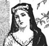
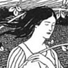
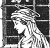

Alison Booth
Baring-Gould, S[abine]. Virgin Saints and Martyrs. London: Hutchinson, 1900. New York: Crowell, 1901.
TOC: Blandina the slave; S. Caecilia; S. Agnes; Febronia of Sibapte; The daughter of Constantine; The sister of S. Basil; Geneviève of Paris; The sister of S. Benedict; S. Bridget; The daughters of Bridget; S. Itha; S. Hilda; S. Elfleda; S. Werburga; A prophetess; S. Clara; S. Theresa; Sister Dora.
Title page: S. Baring-Gould, "Author of The Lives of the Saints. With sixteen full-page illustrations by F. Anger." New York Times obituary notes Rev. S. Baring-Gould's death on 5 June 1906 on shipboard at Port Elizabeth (dateline Cape Town, Cape Colony, June 4). An English clergyman (M.A. Oxford 1860) who traveled to and wrote about Iceland, he wrote many books on myth, church history, and medieval and regional histories. His version of Sister Dora is largely reprinted in Mabie and Stephens, Heroines Every Child Should Know. Viewing Sister Dora as a "double" of Saint Theresa with more practical achievement, Baring-Gould weighs the evidence for Sister Dora's sanctity in various accounts, including Lonsdale's biography.
-
Blandina the Slave
-
St. Cecilia
-
St. Agnes
-
Febronia of Sibapte
-
The Daughter of Constantine
-
The Sister of St. Basil
-
St. Genevieve
-
The Sister of St. Benedict
-
St. Bridget of Kildare
-
St. Itha
-
St. Hilda
-
St. Elfleda
-
St. Werburga
-
St. Clara
-
St. Theresa
-
 Sister Dora
Sister Dora
Search OCLC WorldCat for this title.
Search Google Books for this title.